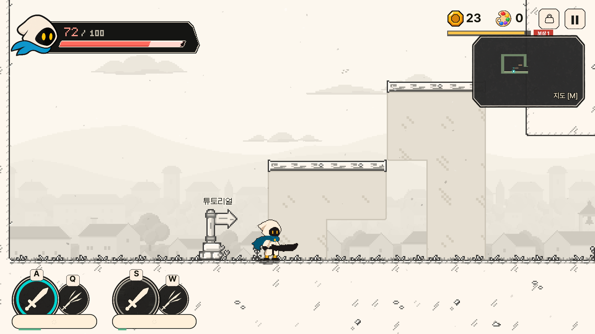
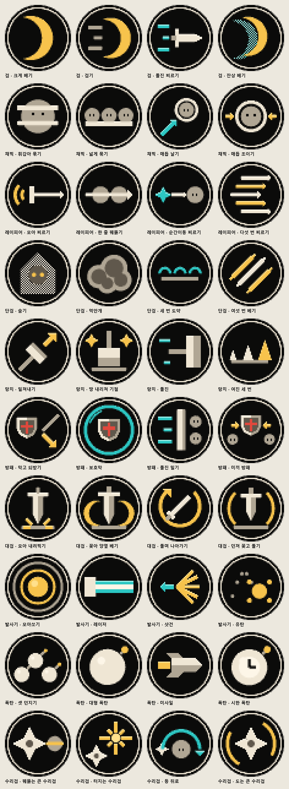
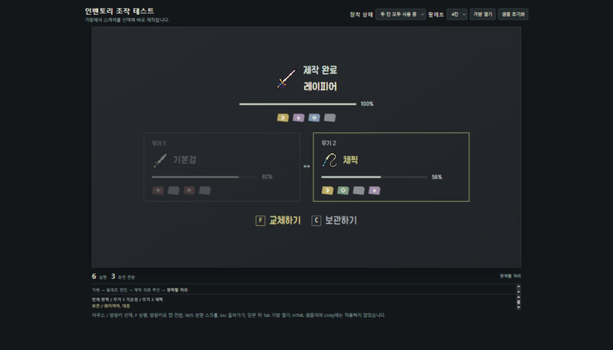
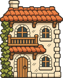
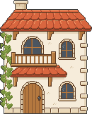

01
혼자 매끈하던 HUD를 도트로
도트 게임 안에서 동전, 버튼, 숫자만 매끈해서 화면이 따로 놀았어요. 먹 2px, 크림 1px 규칙 하나로 모두 다시 그리고, 둥근 원은 서브픽셀로 다듬었어요.
잉크로 그린 스케치 세계를, 무기를 바꿔 들며 돌파하는 액션 게임.
팀을 이끌면서 게임에 보이는 그림의 규칙을 맡았어요. 전투 HUD, 무기와 스킬 아이콘, 맵과 건물의 픽셀 규격을 세우고, 빌드마다 직접 플레이하며 어긋난 곳을 잡았어요.
Unity, 픽셀 편집기, HTML 시험장, 생성 AI 모션

도트 게임 안에서 동전, 버튼, 숫자만 매끈해서 화면이 따로 놀았어요. 먹 2px, 크림 1px 규칙 하나로 모두 다시 그리고, 둥근 원은 서브픽셀로 다듬었어요.

무기 14개와 스킬 40개를 크고 단순하게 다시 그렸어요. 채찍은 스케치로, 방패는 참고 그림으로 방향을 직접 잡았어요.

제작에서 장착까지 14번 누르던 것을 7번으로 줄였어요. 엔진에 넣기 전에 직접 눌러 보는 HTML 비교본으로 흐름을 정했어요.


선과 색 수의 규칙을 정해 두고, 마을 건물과 맵을 같은 격자에 맞춰 직접 다듬었어요.